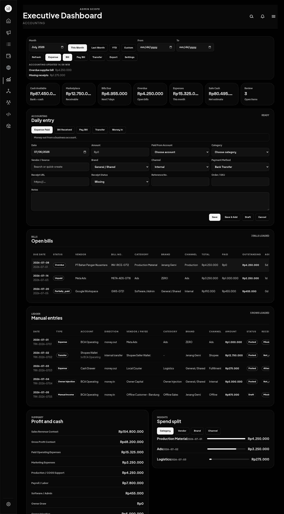
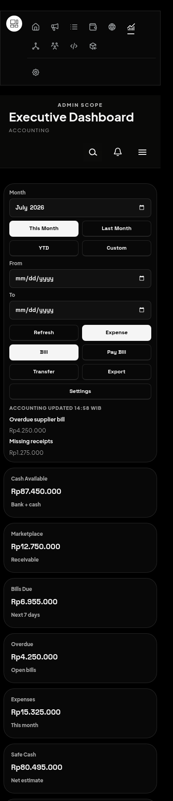

An extensive operating guide for recording expenses, bills, bill payments, transfers, manual money in, review items, and month-end accounting checks.
The Accounting workspace is the operational finance screen inside the Executive Dashboard. It is designed for daily cash control: entering money out, entering bills before they are paid, paying saved bills, recording transfers between accounts, and logging non-marketplace money in.
The screen is intentionally separate from marketplace sales and wallet automation. Marketplace orders and wallet payouts are already tracked elsewhere. Accounting is where the team records manual finance events that would otherwise be missing from cash control.

The Accounting screen is organized from daily control at the top to review and reporting lower on the page.
On small screens, the same controls stack vertically. The workflow is identical, but tables may require horizontal scrolling.

| Concept | Meaning | Example |
|---|---|---|
| Real Cash Available | Money currently available in spendable bank or cash accounts. | BCA Operating + Cash Drawer. |
| Marketplace Outstanding | Marketplace money expected but not treated as spendable bank cash yet. | Shopee wallet balance waiting for payout. |
| Bill | An obligation we owe but may not have paid yet. | Supplier invoice due July 14. |
| Expense | Money that already left the business. | Paid ads charged today. |
| Transfer | Money moved between accounts. It is not income or expense. | Shopee Wallet -> BCA Operating. |
| Manual Money In | Non-marketplace money entering the business manually. | Offline customer payment or owner injection. |
| Receipt Status | Evidence state for the transaction or bill. | Missing, Attached, or Not required. |
| Review Queue | Data-quality checks that need cleanup. | Missing receipt, duplicate, overdue bill. |
The command bar controls what period you are looking at and gives quick entry shortcuts.
| Control | Use it when | What happens |
|---|---|---|
| Month | You want the default monthly accounting view. | The KPI cards, bills, ledger, and summary load for that month. |
| This Month | You are entering or reviewing current-period activity. | Uses the current month. |
| Last Month | You are checking the previous close. | Loads the previous calendar month. |
| YTD | You need year-to-date context. | Loads data from January 1 through the selected period. |
| Custom | You need a specific date window. | Uses the From and To fields. |
The KPI cards provide the daily finance snapshot. They should be checked before entering new data and again after posting large transactions.
| KPI | What it tells you | How to use it |
|---|---|---|
| Cash Available | Spendable cash and bank balance. | Use it to decide whether bills can be paid now. |
| Marketplace | Expected marketplace money not treated as spendable cash yet. | Do not spend this until payout is transferred. |
| Bills Due | Open bills due soon. | Review this daily to prevent overdue invoices. |
| Overdue | Bills past due. | Act immediately: pay, schedule, investigate, or void. |
| Expenses | Paid expenses in the selected period. | Watch sudden increases by checking Insights. |
| Safe Cash | Estimated cash after known obligations. | Use as a conservative spending indicator. |
| Review | Open data-quality issues. | Keep this close to zero before month close. |
The Daily Entry form changes based on the selected mode. This keeps the form shorter and reduces mistakes. The most important required fields are amount, date, account, category, and vendor/source when applicable.
| Field | How to fill it | Why it matters |
|---|---|---|
| Date | Use the date money moved or the bill was issued. | Controls monthly reporting. |
| Amount | Enter the gross amount in Rupiah. | Feeds cash movement and summaries. |
| Account | Choose the account money came from or entered into. | Keeps cash balances correct. |
| Category | Choose the best matching finance category. | Drives spend split and review quality. |
| Vendor / Source | Enter the vendor, payee, customer, owner, or money source. | Supports vendor reports and duplicate checks. |
| Brand | Select the brand that owns the activity. | Separates ZERO, Jenang Gemi, shared costs, and others. |
| Channel | Select operational channel. | Separates Shopee, TikTok, offline, ads, production, and internal activity. |
| Receipt URL | Paste an invoice or receipt link if available. | Reduces review work later. |
| Receipt Status | Choose Missing, Attached, or Not required. | Feeds review queue checks. |
| Reference No. | Enter invoice, bank, or payment reference. | Helps reconcile bank statements. |
| Order / SKU | Use when an expense relates to an order or SKU. | Improves traceability. |
| Notes | Add concise context. | Helps future reviewers understand unusual entries. |
Use Expense Paid when money has already left the business. This is the most common daily entry mode.
Use Bill Received when you receive a supplier invoice but have not fully paid it yet. This creates a bill in the Bills Queue.
Use Pay Bill when paying a bill that already exists in the Bills Queue. This reduces the outstanding amount and creates a payment transaction.
Use Transfer for wallet payout, bank-to-bank transfer, cash deposit, or any movement between accounts. Transfers do not count as income or expense.
Use Manual Money In only for non-marketplace money. Examples include owner injection, offline customer payment, manual invoice payment, refund, reimbursement, loan received, or other non-marketplace income.
| Status | Meaning | Action |
|---|---|---|
| Unpaid | No payment recorded yet. | Pay when scheduled. |
| Partially paid | Some payment has been recorded but balance remains. | Pay remaining outstanding amount. |
| Overdue | Due date is past and outstanding remains. | Escalate and resolve quickly. |
| Paid | Outstanding amount is zero. | No action required unless receipt/reference is missing. |
| Void | Bill was cancelled with a reason. | Keep for audit trail; do not reuse. |
Voiding is used instead of deletion so the audit trail remains intact. Use Void only when an entry is wrong, duplicated, or should not count. Always enter a short reason that a reviewer can understand later.
The Summary section gives profit context and cash movement context for the selected period. It helps compare operational cash movement against broader sales and gross profit context.
Insights group spending by category, vendor, brand, or channel. Use the tabs to answer questions such as:
The Review Queue identifies records that need cleanup. A clean Review count is a good signal that the period can be exported and sent for finance review.
| Issue | What it means | How to resolve |
|---|---|---|
| Missing receipt | Receipt Status is Missing or no receipt URL exists. | Attach a link or mark Not required with a good reason. |
| Overdue bill | A bill is past due and still outstanding. | Pay, schedule, investigate, or void if invalid. |
| Missing category | Entry does not have a useful category. | Edit/update with the correct category. |
| Marketplace income risk | Manual Money In looks like marketplace revenue. | Void if duplicated, or re-enter as Transfer if it was a payout. |
| Duplicate risk | Similar amount/vendor/date already exists. | Confirm which entry is correct and void duplicates. |
Use Export when you need a CSV of manual accounting transactions for the selected month or custom range. The export is intended for reconciliation, review, or handoff to the person preparing final accounting records.
Daily entry reduces forgotten vendors, missing receipts, and incorrect dates.
If we owe money but have not paid, create a bill. Do not wait until payment day.
Marketplace payout is a transfer from wallet to bank, not new revenue.
Missing receipts create review work and slow month close.
Voiding keeps a reason and preserves audit history.
Use consistent categories. Do not create vague vendor names or broad catch-all notes.
| Mistake | Result | Correct approach |
|---|---|---|
| Entering marketplace payout as Manual Money In | Revenue/cash is double-counted. | Use Transfer from marketplace wallet to bank. |
| Entering unpaid invoice as Expense Paid | Cash looks lower before payment happens. | Use Bill Received, then Pay Bill later. |
| Skipping vendor/source | Insights become useless. | Enter the vendor, payee, source, or customer. |
| Leaving receipt missing | Review Queue stays open. | Attach URL or mark Not required. |
| Using wrong date | Month totals become inaccurate. | Use actual movement date or invoice date. |
| Problem | Likely cause | What to do |
|---|---|---|
| Numbers did not update after saving | Data has not refreshed yet. | Click Refresh and check selected month. |
| Bill does not appear in Pay Bill | Bill may already be paid/voided or filtered out. | Check Bills Queue status and selected month. |
| Amount is not accepted | Amount is blank or zero. | Enter a positive Rupiah amount. |
| Transfer form rejects entry | From and To accounts are the same or missing. | Choose two different accounts. |
| Manual income warning appears | The source/channel looks like marketplace revenue. | Use Transfer if this is a payout. |
| Export is missing rows | Wrong month/range selected. | Select the correct month or custom range before export. |